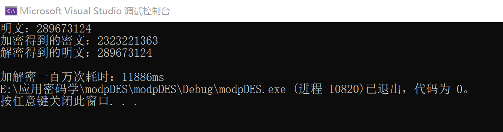
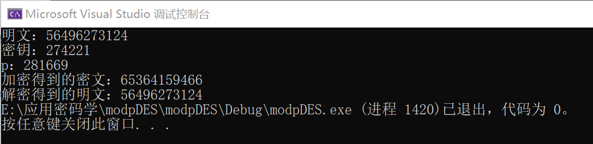
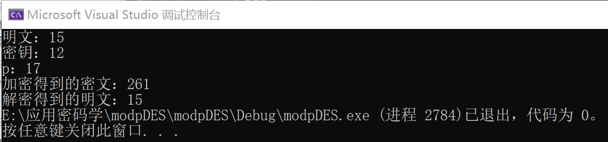

# 实验目的
设计并实现针对有限域的对称密码算法。在作业三的基础上，把明文、密文、密钥的取值范围从 ' 任意 64bit 数据 ' 改为 ' 从 0 到 p-1 之间的整数 '，其中 p 是一个小于 2^{64} 的素数。密文应在密文空间内均匀分布。
# ModpDES 算法设计
ModpDES 算法与 DES 算法一样，使用了 Feistel 结构，但是与之不同的是，由于需要将明文、密文、密钥空间改为 0 到 p-1 之间的整数，也就是我们不能够再使用原来 DES 算法中对明文的初始置换，48 位子密钥的生成和加密函数 f 等，例如 S 盒之类的矩阵我们也不能够使用，因为它们为 64bit 一组的数据设计的。因此，我们需要重新设计加密函数 f，同时抛弃初始置换等置换操作和 S 盒等混淆操作，仅仅保留 Feistel 结构进行 16 轮的迭代。
下面我们来对算法核心做一些说明：
# 生成子密钥
由于循环左移、置换选择等操作可能会导致模 p 的密钥变成大于 p 的数，因此我们这里仅仅使用一个表达式由密钥生成 16 个子密钥，这里定义为 uint32_t 类型：
1 | uint32_t sub_key[16] = { 0 }; |
这里的子密钥生成根据 subkey = key * c % p，其中 c 是一个常数，为了确保每个子密钥各不相同，我们经历一次循环就将 c 的值改变，具体 c = (c * c) % 1000，这样就根据密钥生成了 16 个子密钥。
# 加密函数 f
加密函数是算法最核心的部分，它的作用是在第 i 次加密迭代中用子密钥 Ki 对 R_{i-1} 进行加密。我们抛弃原来 DES 加密函数的设计思想，将加密函数 f 定义为：
f(Right, RoundKey) = (Right^{-1} * C + RoundKey) mod p
其中，Right^{-1} 为每次加密迭代中右部模 p 的乘法逆元，对于如何求解乘法逆元的问题，这里采用了费马小定理求取乘法逆元（具体介绍可见费马小定理求逆元）。求取逆元的函数如下：
1 | uint64_t inverse_R(uint64_t base, uint64_t idx, uint64_t p) { |
其中 base 为右部，idx 为 p-2。
根据加密函数的定义，构造如下加密函数：
1 | uint64_t encrypt_f(uint64_t R, uint32_t p, uint32_t sub_key) { |
其中常数 C 设为了 21，当然也可以设成任何值。
# 加密过程
加密过程会进行 16 加密迭代。首先将明文 m 分为左右两部：L = m /p, R = m % p，这样就将明文分成了左右两部分，且这两部分均为 mod p 的，因为明文 mod p^2；然后进入 16 轮的循环中，将右部和子密钥送入加密函数 f 中进行计算，然后计算新的 R = (L + f) % p，最后将 L = 原来的右部；循环加密迭代结束后，返回密文，其中密文等于 R * p + L
代码实现如下：
1 | uint64_t encrypt(uint64_t input, uint32_t p, uint32_t subkey[]) { |
加密过程的结构如下（仅展示第一次解密迭代过程，后续过程相同）：

# 解密过程
解密过程几乎与加密过程类似，只是在解密的时候计算右部并未是 R = (L + f) % p，而是 R = (L - f) % p，从而实现了加解密可逆；而子密钥的使用顺序与加密过程相反。代码实现如下：
1 | uint64_t decrypt(uint64_t cipherText, uint32_t p, uint32_t subkey[]) { |
# 实验结果分析
我们将明文设为 289673124，密钥设为 26372，p 设为 49993（素数），测试加解密一百万次花费的时间，得到如下结果：

可以看出，明文和密文都是模 p^2 的数，加解密一百万次仅耗时 11886 毫秒，速度很快。
下面我们测试一下较大 p 和较小 p 的情况：


可以看出，加解密过程正确，且明文和密文空间均模 p^2，满足要求。